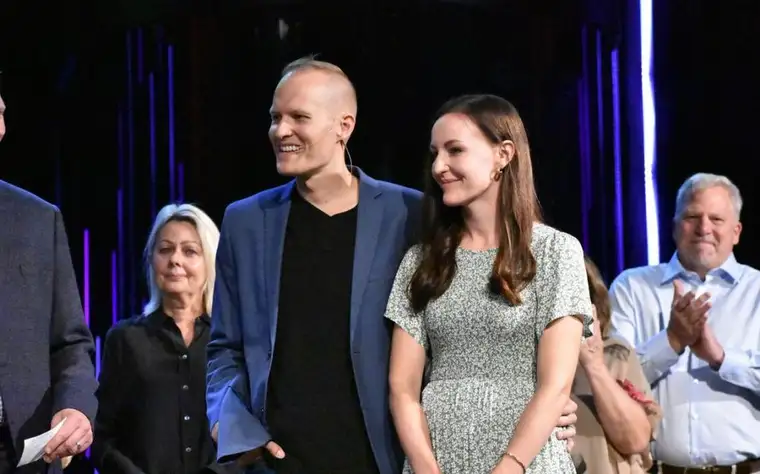

FARGO — Losing his own father at a young age from abandonment first broke, then shaped, the spirit of David Leedahl, ultimately bringing him closer to God the father.
Now, in his transition to take over as lead pastor at Northview Church, he seeks to be a father to others, leading them to their heavenly father.
“If God says he’s a father to the fatherless, that needs to be real to me, too,” Leedahl says of the lifelong quest to find healing. “I would often pray about that, and ponder that in my life.”
Eventually, that prayer was answered, becoming an indelible part of his testimony. “Even with all the great education on families and teaching in churches, it continues to be a struggle for people,” he says, referring to “the father wound.”
Leedahl shares how God began filling the gaps following his father’s departure. First, he says, his mother, in raising him and his twin brother, Nate, without an involved husband, demonstrated “supernatural strength and wisdom to play both roles in some way.”
It also happened through men who taught the boys how to use tools and build things like pinewood derby cars for Cub Scouts. “My (maternal) grandfather also taught me how to fish and hunt and drive,” he says, noting that uncles and other male friends also stepped in.
But the fatherly provisions didn’t end after high school. Once at North Dakota State University, his college pastor, Brad Lewis, assumed a key fatherly role. A simple question from Lewis about Leedahl’s father opened the floodgate. “I thought I had conquered that, but it showed me there was still pain there,” he says.
Rather than preaching to him, Lewis gave him a “life verse,” he adds, Psalm 68:5, a passage praising the “Father of the fatherlessness,” which he’s kept close ever since.
Once he saw God meeting that fatherly need, Leedahl says, healing began, driving him to want to become the husband and dad he’d needed growing up — for his three children and others he serves.

God in college
Through Chi Alpha, a campus ministry program, Leedahl found himself drawn to ministering to others. “I found some of these young men coming to NDSU just as broken as I was.”
There to pursue a career as a pharmacist, inspired by an uncle, Leedahl ultimately was led to his most recent position as pharmacy director for Sanford. But a dream to someday go into ministry that had begun forming then never really left.
While still a student, Leedahl pursued ministry credentials, and continued serving campus ministry after graduation, including during his residency at Mayo Clinic, and again, after returning to Fargo.
His wife, Alissa, whom he met in college, shares his interests in both medicine and ministry. Having worked for years as a birthing nurse, she recently left that path to serve as children’s pastor at Northview.
Leedahl had been serving in the capacity of teaching pastor along with his other work in recent years. Observing them both, the Rev. Bob Ona, recognizing their gifts, asked the couple to consider praying about God’s will for them at Northview.
It finally became apparent God wanted more of the couple, Leedahl says, so nearly simultaneously, both agreed to step away from the medical field for ministry. “The transition period will be until the end of October,” Leedahl says, giving Sanford time to absorb his absence.

A fitting helpmate
Alissa’s own journey toward God also began hastening in college, she says. Her experience with Chi Alpha also brought healing and hope during a time of depression and anxiety. “My relationship with God became real to me because I experienced him in such a personal way, and I began wanting to share that with others.”
Then, in her sophomore year, Alissa’s grandfather, an Assemblies of God minister from Finley, N.D., passed away.
“He really loved people well, including his own family,” she says, noting that, though she was one of 22 grandchildren, she always felt like the favorite. “Later, I learned the others all felt the same.”
Alissa realized an essential person had left the earth, she says. “I started wondering, who’s going to love people like he did? It was then my heart started stirring for ministry.”

In her new role, she will be working part time at the church while tending to their three young children at home the rest of the time.
“We know that introducing kids to truth at a young age is so vital, and that, by age 9, their spiritual foundation is largely in place,” Alissa says. The Northview team aims to present strong Biblical truths in an engaging way.
“These are little humans, and we want their first experience with church to be encouraging, and for the church to be a place where they can belong and become all that God wants them to be.”
Alissa also stands ready to assist her husband. “God has given him gifts and talents and abilities to lead this church, and now we’ve come to this point of him being able to jump in and be lead pastor. It’s an honor to support him, and fun to be on this journey together.”
Though the double transition might seem wild to those on the outside, she says, they feel God’s hand in it all. “We know it’s not about us. God could use anyone. But God has something special for this community, and we’re honored to be a part of it.”
Saying goodbye
After 15 years of active ministry, Ona and his wife, Sharon, will be moving back to Milwaukee, Wis., where he pastored earlier. He looks forward to continuing advising a nonprofit group, along with helping at-risk, inner-city children, and becoming a more integral part of his grandkids’ lives.
“There will be a lot of baseball and basketball games,” he says.
They will also continue to follow the adventures of their son who works as an executive chef in Shanghai, China.

Ona’s life began on a family farm near Thief River Falls, Minn. The family later moved to Minneapolis. “I was about to be drafted during Vietnam, and went into the Army as a chaplain’s assistant,” he says, noting that “the sense of calling was always there.”
He and Sharon attended Northcentral University in Minneapolis, and from there, began working in churches, along with furthering his education. But about five years ago, the Onas sensed God drawing them elsewhere, and that’s when they approached the Leedahls. “It’s been a healthy process. It began to become apparent to the people in the church that Dave was going to be the new pastor. It just had to be apparent to him and Alissa, too.”
The Onas have watched Fargo change and grow from a more rural area to a small city with great university influences, he says, along with some big-city challenges. “The spiritual needs and tastes have changed, and I think a church has to change its methods to reach people,” Ona says. “Dave has been part of that, and has a wonderful future here. He’s going to enjoy a great ministry; I’m sure of that.”
He calls Leedahl a talented communicator who brings a lovely family with him. “There’s no success without a successor, and I think we have a big success with the Leedahls coming in and beginning to lead this congregation,” he says. “We are leaving without regret and a transition without loose ends and unfinished business. Everyone is very peaceful about it. That’s a good way to leave.”
[For the sake of having a repository for my newspaper columns and articles, I reprint them here, with permission, a week after their run date. The preceding ran in The Forum newspaper on Sept. 10, 2021.]